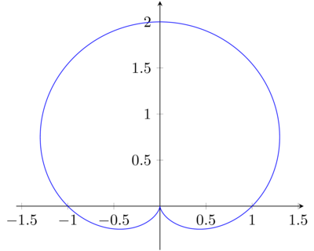
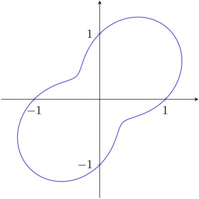

Symmetries in polar curves
Table of Contents
Introduction
There are 3 types of symmetries that polar curves can exhibit:
- About the x-axis / polar axis
- About the y-axis / the line \(\theta = \pi/2\)
- About the pole
When we say a curve has "symmetry about the x-axis", it means that reflecting the curve across the x-axis does not change it. Likewise, a curve with "symmetry about the y-axis" is unchanged by reflections about the y-axis, and a curve with "symmetry about the pole" is unchanged by reflections about the pole.
For example, the curve of \(r = 1 + \sin \theta\) has symmetry about the x-axis, but not the y-axis or the pole:

On the other hand, the curve of \(r = 1 + \cos \theta \sin \theta\) has symmetry about the pole, but not about the x-axis or the y-axis:

Perhaps interestingly, we can formalize the notion of symmetry using groups.
Groups
There is a precise definition of a group, but for simplicity we shall use a more informal definition:
- The composition of any two actions is another action in \(G\)
- Each action can be reversed
- The composition is associative
The order of \(G\) is defined as the number of actions in \(G\).
The first condition is an instance of a property called closure. In this case, we say that \(G\) is closed under composition.
We shall denote the composition of 2 actions \(a,b\) (applying \(a\), then \(b\)) by \(ab\). Thus the third condition can be described as follows: suppose we want to compose 3 actions \(a,b,c\) in that order. There are two ways we can achieve this:
- Compose \(ab\) with \(c\).
- Compose \(a\) with \(bc\).
What associativity says is that both methods should yield the same action, i.e. \((ab)c = a(bc)\).
What does this have to do with the 3 types of symmetries mentioned earlier? Well, these symmetries are closely related to their corresponding actions on the plane:
- Reflection about the x-axis, \(h\)
- Reflection about the y-axis, \(v\)
- Reflection about the pole, \(d\).
We shall add an additional action, called the identity:
- Doing nothing, \(e\).
It turns out that these four actions form a group \(\{e,h,v,d\}\), which we shall simply denote \(V\). Note that the identity corresponds to the action \(h^2\) (and \(v^2\), and \(d^2\)). For those who know group theory, this group is isomorphic to the Klein 4-group \(V_4\).
Subgroups
Every group \(G\) automatically has two subgroups, namely itself and the trivial group \(\{e\}\) (every group has an identity element). However, \(V\) has a few additional subgroups, namely \(\{e,h\}\), \(\{e,v\}\) and \(\{e,d\}\). Note that there are no subgroups with 3 elements; this is a result of Lagrange's Theorem, which will not be proven here:
Stabilizers
Using this definition, we can rephrase the examples in the introduction:
- The stabilizer of the curve \(r = 1 + \sin \theta\) is \(\{e,h\}\)
- The stabilizer of the curve \(r = 1 + \cos \theta \sin \theta\) is \(\{e,d\}\).
Intuitively, the stabilizer measures how much symmetry an object has. The bigger the stabilizer, the more symmetry it has; if the stabilizer of a polar curve is \(V\) itself, then the curve has all 3 symmetries.
Clearly the stabilizer of any curve must contain the identity. Note also that the above stabilizers were both subgroups; this is the case for all polar curves.
That stabilizers are subgroups is a non-trivial fact: it implies that the stabilizer of a curve can never have 3 elements, because of Lagrange's Theorem. In other words, if a curve is stabilised by any two non-identity actions, then it is stabilised by the other non-identity action.
Conclusion
This was a simple application of group theory, where there were only 3 different symmetries. However, groups can be applied in many other settings where there is a notion of symmetry, and it can yield deep and non-trivial results. Indeed, the power of group theory lies in its generality.
For example, the moves of the Rubik's Cube form a group with \(4 \times 10^{19}\)(!) elements. The results used here are also applied to analyse the symmetries of this gigantic group, which allows us to develop solving algorithms, as well as compute God's number.